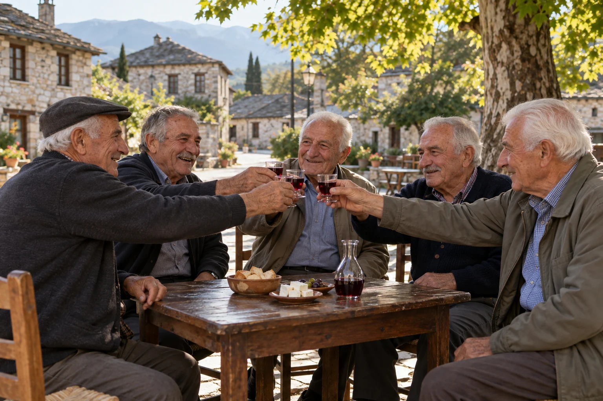
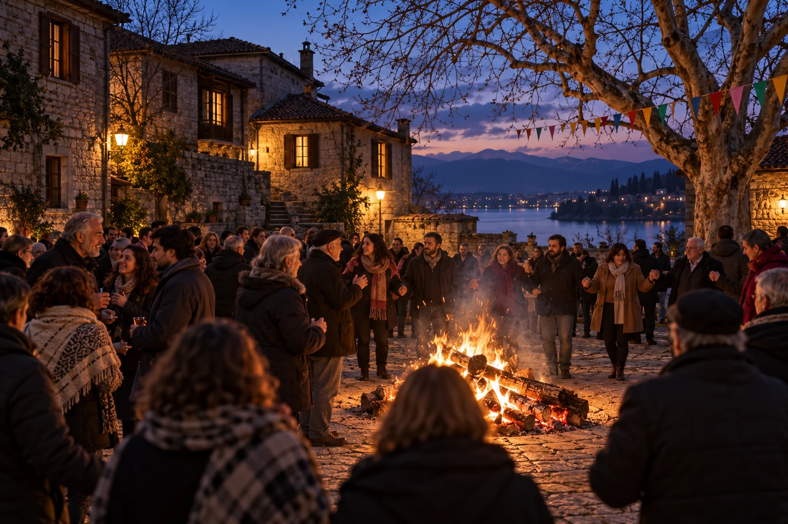
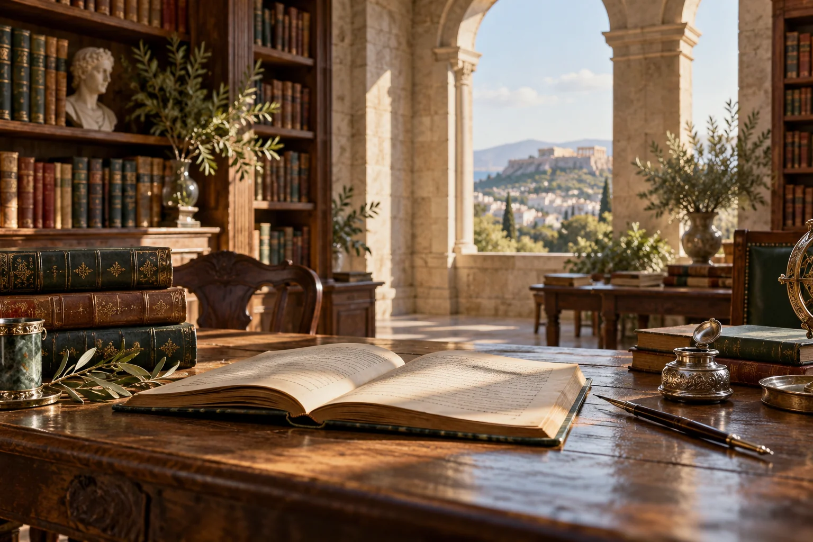

01 / Τόποι
Ο τόπος & η φύση
Τοπία, χωριά, βουνά, ποτάμια και αθέατες διαδρομές.
Ανακαλύψτε →Ένας τόπος με πέτρινα γεφύρια, πολυφωνικά τραγούδια, ιστορίες ξενιτιάς και παράδοση που συνεχίζει να αναπνέει. Ανακαλύψτε την κληρονομιά της Ηπείρου μέσα από τον Ηπειρωτικό Σύνδεσμο Πειραιώς.
Από τα βουνά της Πίνδου έως τις ακτές του Ιονίου. Η ιστορία, η τέχνη, η φύση και οι άνθρωποι μιας ξεχωριστής περιοχής.
Τοπία, χωριά, βουνά, ποτάμια και αθέατες διαδρομές.
Ανακαλύψτε →
Από το πολυφωνικό τραγούδι στις μουσικές της κάθε κοινότητας.
Ακούστε τις ιστορίες →
Από τις τοπικές κοινότητες στους ευεργέτες και τη διασπορά.
Διαβάστε περισσότερα →
Οι γιορτές, τα πανηγύρια και οι συνήθειες που μας ενώνουν.
Δείτε τις παραδόσεις →
Πέτρα, ασήμι, ξύλο, υφαντική και η τέχνη του τόπου.
Εξερευνήστε →
Πατροπαράδοτες πίτες, τοπικά προϊόντα και μυστικά κουζίνας.
Μπείτε στην κουζίνα →Όχι μόνο τοπία και μνημεία: οι άνθρωποι, η καθημερινή τους ζωή και οι παραδόσεις που μεταδίδονται από γενιά σε γενιά.
Μια ξεχωριστή συλλογή λαογραφικών αφιερωμάτων με ιστορικές πηγές, φωτογραφίες αντικειμένων, προφορικές μαρτυρίες, βίντεο και διαδρομές στον χάρτη. Οι παρακάτω τέσσερις ενότητες είναι η αφετηρία· κάθε χωριό και εποχή έχει τις δικές του παραλλαγές.
Από τα εργαστήρια των μαστόρων στα περίτεχνα σκεύη και κοσμήματα: τεχνικές όπως το φιλιγκράν και το σαβάτι, εργαλεία, δημιουργοί και η συνέχεια της τέχνης σήμερα.
 02 / Ο κύκλος του χρόνου
02 / Ο κύκλος του χρόνουΗ εποχική απόσταξη ως αφορμή συνάντησης: σταφύλια, στέμφυλα, καζάνι, φωτιά, μεζέδες και αφηγήσεις γύρω από μια παράδοση που παραμένει ζωντανή σε πολλές ηπειρώτικες κοινότητες.
Η προετοιμασία της νύφης, τα προικιά, τα γαμήλια τραγούδια, το γλέντι και οι οικογενειακές τελετουργίες: ένα πολυήμερο κοινωνικό γεγονός με διαφορετικές εκφράσεις ανά τόπο και εποχή.
Η ζωή πίσω από τα στερεότυπα: εργασία στα χωράφια και στο σπίτι, υφαντική, ανατροφή παιδιών, ξενιτιά, μητρότητα, κοινωνικοί περιορισμοί αλλά και πρωτοβουλία, δημιουργία και αλλαγή.
Κάθε θέμα εμπλουτίζεται σταδιακά με τεκμηριωμένες φωτογραφίες, συνεντεύξεις, καταγραφές κατά χωριό, πηγές και ηχητικά ντοκουμέντα. Οι τέσσερις ενότητες είναι η αφετηρία και όχι ολοκληρωμένες μουσειακές συλλογές.
Μια συλλογή που θα μεγαλώνει με μαρτυρίες, πρωτογενές υλικό και συνεργασίες με ερευνητές, κοινότητες και οικογένειες.

Οι άνθρωποι που συνέδεσαν την αποδημία με την παιδεία και την κοινωφελή προσφορά.

Φωνές που κρατούν ζωντανή την κοινότητα.

Η τεχνική και η σημασία κάθε ενδύματος.

Μάστοροι, μετανάστες και οικογένειες: αληθινές διαδρομές, μνήμη και νόστος.
Οι δρόμοι που χτίστηκαν με πέτρα.
Φωτογραφικά αφιερώματα, πολιτιστικές διαδρομές και θεματικές ιστορίες με τεκμηριωμένο περιεχόμενο.